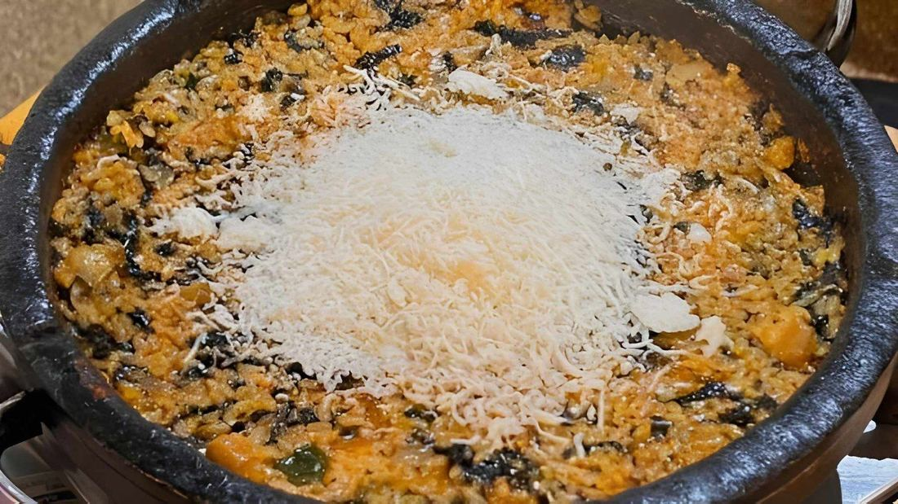
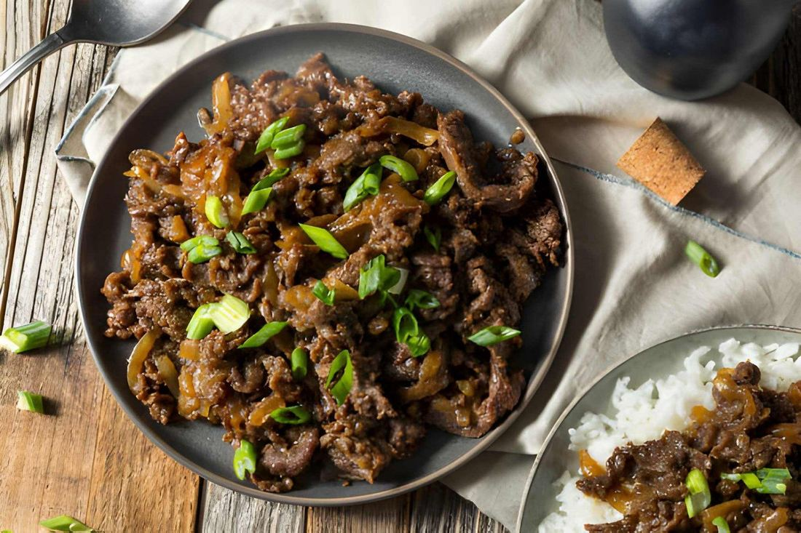
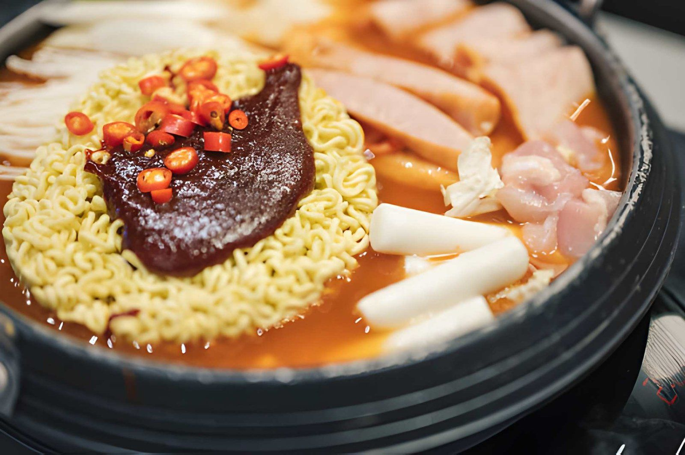
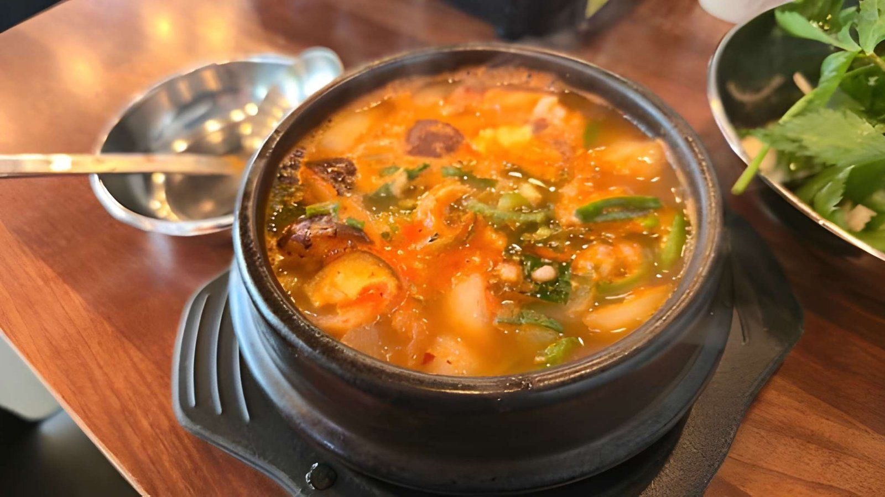
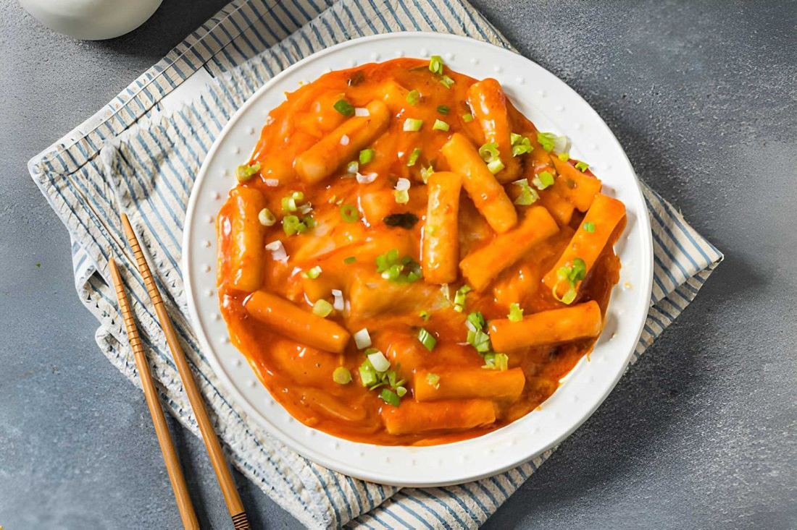
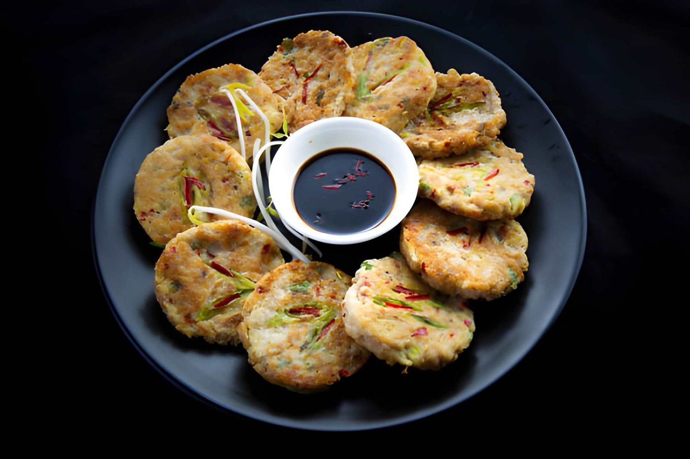
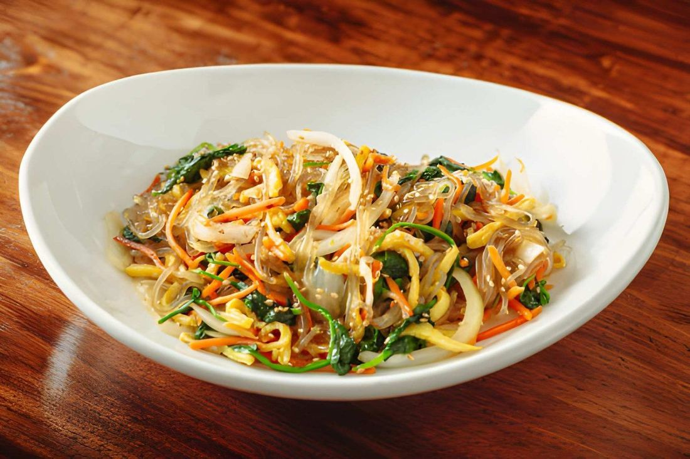
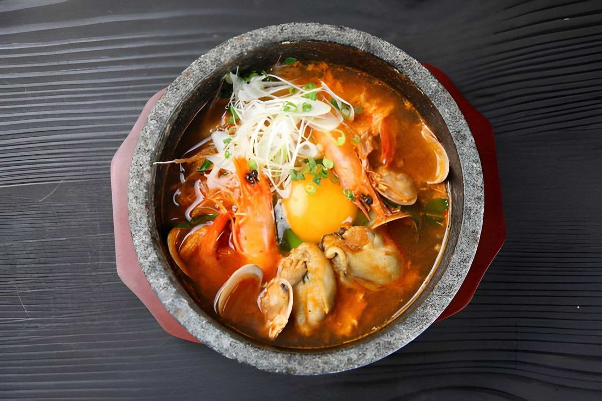
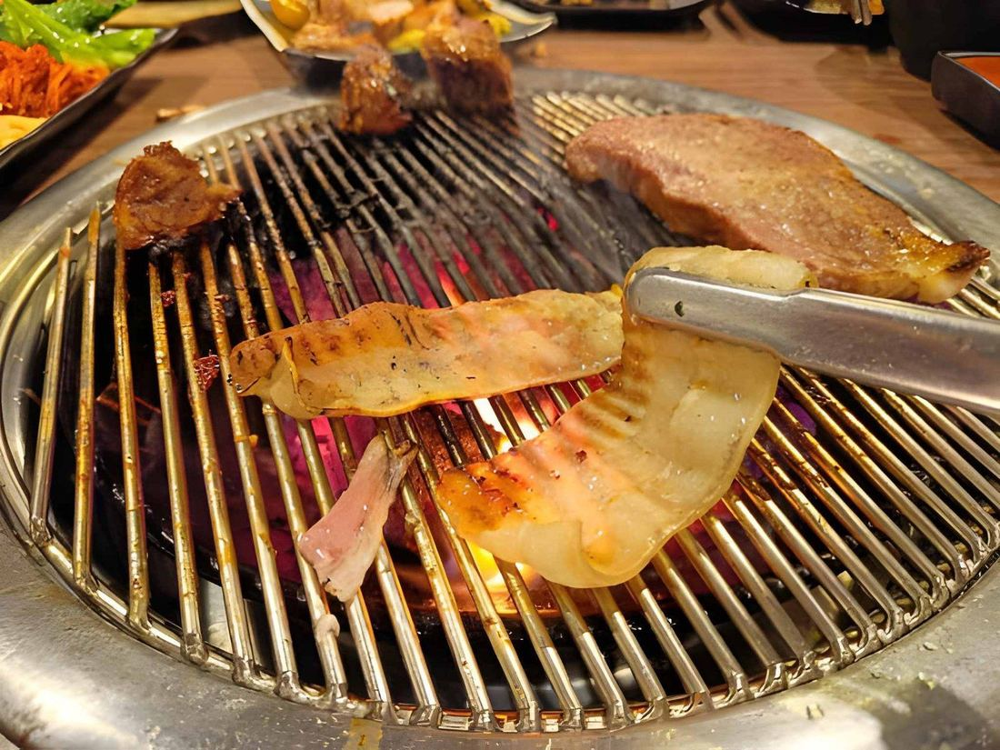
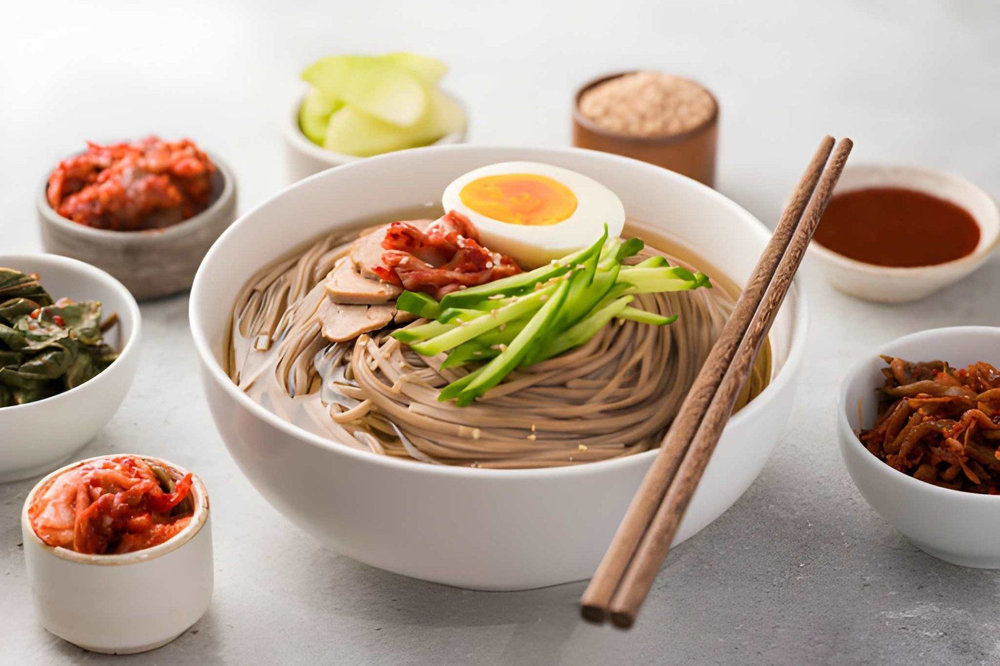

10 Korean Comfort Foods You Can Make with Ingredients from an Asian Grocery Store
Korean cuisine is known for its bold flavors, nourishing ingredients, and comforting dishes that bring warmth to the table. Many people associate Korean food with restaurant dining, but the truth is that many traditional meals can easily be prepared at home with ingredients found at a miami asian grocery store.
South Florida has a diverse food culture, and Miami is home to a wide range of Asian markets offering authentic Korean ingredients. From fermented kimchi and spicy chili paste to fresh vegetables and specialty noodles, these markets make it easy to recreate Korean comfort foods in your own kitchen.
Whether you’re new to Korean cooking or looking to expand your culinary skills, visiting an asian grocery store miami residents trust can open the door to a world of delicious recipes. In this guide, we’ll explore 10 Korean comfort foods you can easily make using ingredients from Asian grocery stores in Miami.
Looking for authentic Korean cooking ingredients? Read more about a trusted miami asian grocery store today to explore traditional sauces, fresh vegetables, and specialty products for homemade Korean comfort meals.
Why Korean Comfort Foods Are So Popular
Comfort foods are dishes that provide warmth, nostalgia, and satisfaction. Korean comfort food is unique because it balances flavors like spicy, savory, sweet, and fermented in one meal.
Many Korean dishes also include nutritious ingredients such as vegetables, fermented foods, rice, and lean proteins.
One of the best parts about cooking Korean food at home is that the ingredients are widely available in asian groceries miami shoppers visit for authentic Asian cooking supplies.
1. Kimchi Fried Rice (Kimchi Bokkeumbap)
Kimchi fried rice is one of the easiest and most popular Korean comfort foods. It’s perfect for using leftover rice and adds bold flavor thanks to fermented kimchi.

The dish typically includes:
- Cooked rice
- Kimchi
- Garlic
- Soy sauce
- Egg or pork
Many shoppers look for the best kimchi when preparing this dish because the quality of kimchi greatly influences the final flavor. Kimchi fried rice is quick to cook and incredibly satisfying, making it ideal for weeknight meals.
2. Korean Beef Bowl (Bulgogi Bowl)
Bulgogi is one of Korea’s most famous dishes. Thinly sliced beef is marinated in a mixture of soy sauce, garlic, sesame oil, sugar, and pear juice before being grilled or stir-fried.
When served over rice with vegetables, it becomes a comforting meal that is both flavorful and filling.

All the necessary ingredients can easily be found at an asian market in Miami , where specialty sauces and marinades are widely available.
3. Korean Army Stew (Budae Jjigae)
Budae Jjigae is a hearty Korean stew that combines Korean flavors with Western ingredients such as sausage, spam, and instant noodles.

The stew includes:
- Kimchi
- Chili paste
- Tofu
- Vegetables
- Noodles
This dish became popular during difficult times in Korea and remains a beloved comfort food today. Many ingredients can be found in Chinese stores in Miami, which often carry similar Asian sauces and packaged goods used in Korean cooking.
4. Korean Soybean Paste Stew (Doenjang Jjigae)
Doenjang jjigae is a traditional Korean soup made with fermented soybean paste, tofu, vegetables, and sometimes seafood or meat.

It’s deeply savory and incredibly comforting, especially during colder months. The key ingredient, soybean paste, is widely available in asian groceries in Miami markets that specialize in Korean and Japanese products.
5. Korean Spicy Rice Cakes (Tteokbokki)
Tteokbokki is a popular Korean street food made from chewy rice cakes cooked in a spicy and slightly sweet chili sauce.

The dish often includes:
- Rice cakes
- Fish cakes
- Chili paste
- Sugar
- Garlic
Rice cakes can easily be found in the frozen section of a Korean supermarket in Miami , where specialty Korean ingredients are commonly stocked.
6. Korean Pancakes (Pajeon)
Korean pancakes are savory and crispy, typically made with scallions and sometimes seafood.

They are made using:
- Flour batter
- Eggs
- Vegetables
- Seafood (optional)
These pancakes are simple yet flavorful and are often served with soy dipping sauce.
Fresh vegetables and seafood used in this dish are commonly available in any asian grocery store that Miami residents visit for authentic Asian cooking ingredients.
Ready to cook Korean comfort foods at home? Stop by a local asian market in Miami to find authentic ingredients that make traditional Korean recipes easy and delicious.
7. Korean Glass Noodles (Japchae)
Japchae is a popular Korean noodle dish made with sweet potato glass noodles stir-fried with vegetables and sometimes beef.

The dish is lightly sweet and savory, making it a favorite at family gatherings and celebrations.
Sweet potato noodles can often be found in Asian grocery stores located near the Korean market in Pembroke Pines, where many specialty Korean products are available.
8. Korean Soft Tofu Stew (Sundubu Jjigae)
Sundubu jjigae is a spicy stew made with soft tofu, chili paste, seafood or meat, and vegetables. The stew is known for its rich, comforting broth and silky tofu texture.
Many Korean food enthusiasts find the ingredients for this dish in Korean grocery markets in Hollywood, Florida, that specialize in traditional Korean ingredients.

Stores such as Kimchi Mart Hollywood often carry fresh tofu, chili paste, and other essentials needed for this comforting meal.
9. Korean BBQ Lettuce Wraps (Ssam)
Korean BBQ lettuce wraps are a fun and interactive meal where grilled meat is wrapped in lettuce with rice, garlic, and chili paste. The combination of fresh vegetables and savory meat makes this dish both healthy and satisfying.

Shoppers often visit grocery stores in pembroke pines fl that carry Asian ingredients when preparing Korean barbecue meals at home.
10. Korean Cold Noodles (Naengmyeon)
Naengmyeon is a refreshing noodle dish served cold in a chilled broth with vegetables and boiled egg. This dish is especially popular during warm weather and offers a unique balance of tangy, savory, and refreshing flavors.
Many ingredients for this dish can be found in specialty stores such as the best Korean grocery coral springs locations, known for authentic Korean noodles and sauces.

Shoppers may also visit Kimchi Mart in Coral Springs or a nearby grocery store in Coral Springs to find traditional Korean ingredients.
Why Asian Grocery Stores Are Essential for Korean Cooking
Asian grocery stores play a key role in helping people recreate authentic international cuisines.
These markets typically offer:
- Imported sauces and spices
- Fresh Asian vegetables
- Specialty noodles and rice
- Frozen dumplings and seafood
- Fermented foods like kimchi
Without these specialty stores, it would be difficult to cook authentic Korean meals outside of Korea. Fortunately, Miami’s multicultural food scene provides easy access to these ingredients.
Want to explore authentic Korean ingredients and recipes? Visit our Contact page to learn more about our miami asian grocery store and discover everything you need for Korean cooking at home.
Conclusion
Korean comfort food offers a unique combination of bold flavors, nutritious ingredients, and satisfying meals. From kimchi fried rice to spicy tofu stew, many classic dishes can easily be recreated at home.
Thanks to the growing number of asian groceries miami residents can access, finding authentic Korean ingredients has never been easier.
By visiting a reliable miami asian grocery store, home cooks can discover traditional sauces, fresh produce, and specialty ingredients that bring Korean recipes to life.
FAQs
-
What ingredients are essential for Korean comfort foods?
Common ingredients include kimchi, chili paste, sesame oil, soy sauce, garlic, rice, and various vegetables.
-
Where can I buy Korean cooking ingredients in Miami?
You can find them at Asian grocery stores and Korean supermarkets that specialize in international foods.
-
Are Korean comfort foods difficult to cook?
Most Korean comfort foods are simple to prepare once you have the right ingredients and basic cooking techniques.
-
What is the most popular Korean comfort food?
Kimchi fried rice, bulgogi, and spicy tofu stew are among the most popular Korean comfort foods.
-
Do Asian grocery stores carry Korean products?
Yes. Many Asian grocery stores carry Korean sauces, noodles, vegetables, and frozen foods used in traditional recipes.
< Older Post
Shop these ingredients at Kimchi Mart
Six stores across South Florida — or order online and pick up in an hour.